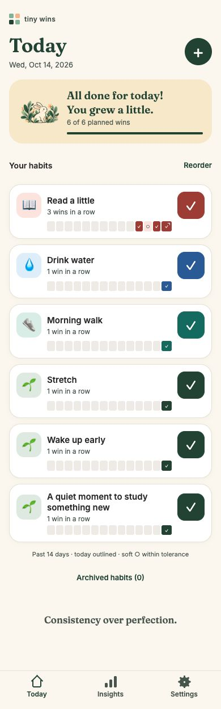
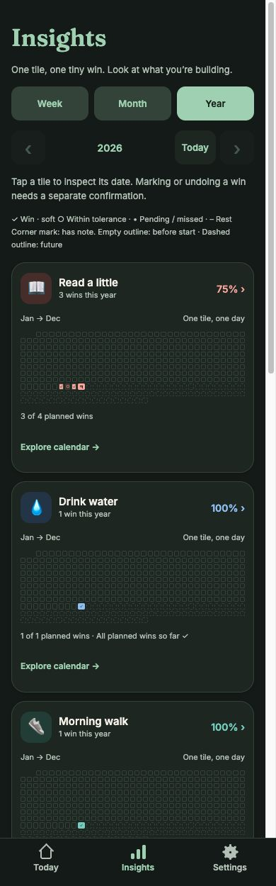

MENOS COBRANÇA. MAIS PEQUENAS CONQUISTAS.
Todo grande hábito começa pequenininho.
Uma página lida. Uma volta no quarteirão. Um tempinho para você. Dê valor ao que fez hoje e veja suas pequenas vitórias ganharem forma.
Conheça o Tiny WinsEm breve para iPhone · Android em desenvolvimento

SEU ESFORÇO, À VISTA
Um ladrilho.
Uma pequena vitória.
Marque o que você fez e acompanhe sua história na semana, no mês ou no ano. Cada ladrilho preenchido é um dia em que você apareceu por você.
Perdeu um dia? Suas conquistas anteriores continuam ali. Consistência não precisa de perfeição.
Encontre o seu ritmo
Também no modo escuro.

A aparência pode mudar até o lançamento.
CABE NA VIDA REAL
O hábito é seu.
O ritmo também.
- A semana tem espaço
- Caminhar três dias na semana? Escolha uma meta e decida os dias conforme a vida acontece.
- Uma pausa para respirar
- Nos hábitos diários, configure dias de tolerância. A sequência continua, e os intervalos ganham uma marca suave, sem virar vitórias extras.
- Mais que uma marcação
- Guarde uma nota curtinha, personalize cores e ícones e leve uma cópia do histórico com o backup.
ESTAMOS CULTIVANDO ALGO BOM
Seu próximo pequeno passo
está chegando.
Tiny Wins está em desenvolvimento, com o primeiro lançamento planejado para iPhone. Compra única para baixar, sem assinatura.
Ainda não disponível para download. Sem data prometida — com carinho em cada detalhe.